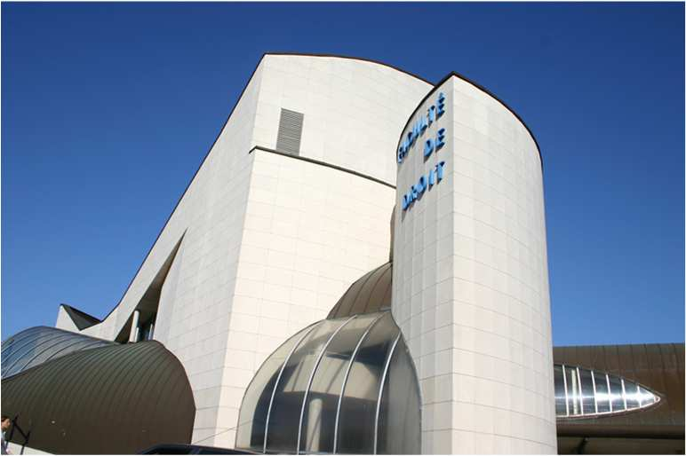
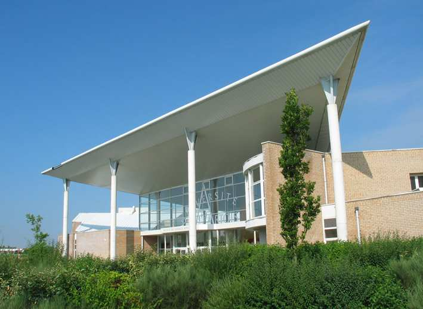
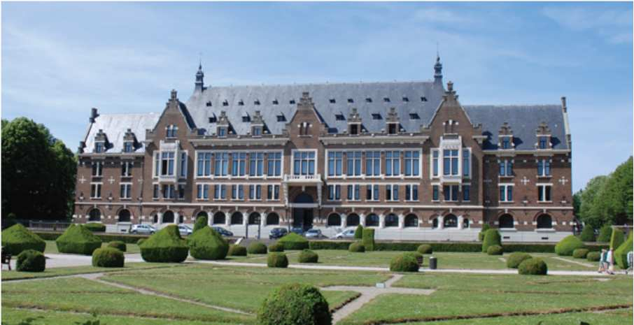
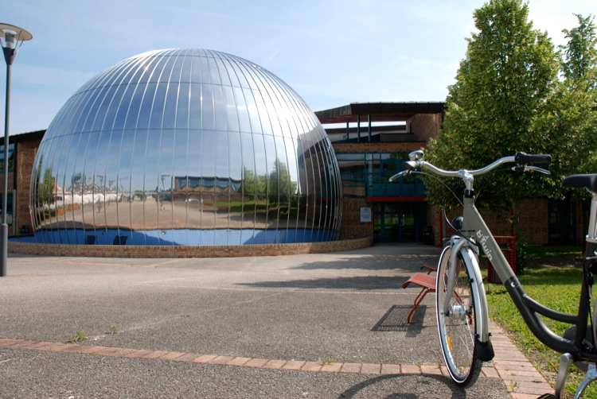

La bonne réponse est :l’Université d’Artois est présente dans chacune de ces 5 villes
L’université d’Artois est implantée sur les sites d’Arras, Béthune, Douai, Lens et Liévin et accueille plus de 10 500 étudiants.
Créée en 1992, elle comprend 8 UFR (Unité de Formation et de Recherche), 2 IUT (Institut Universitaire de Technologie) et 16 centres de recherche.
C’est une université moderne et dynamique qui propose de nombreux services à l’étudiant :
services des sports, service santé, service d’aide à l’orientation et à l’insertion professionnelle, accueil des étudiants en situation de handicap, vie
culturelle...

DOUAI
LIEVIN

FACULTE DE BETHUNE

FACULTE DE LENS
IUT DE BETHUNE
IUT DE LENS

ARRAS